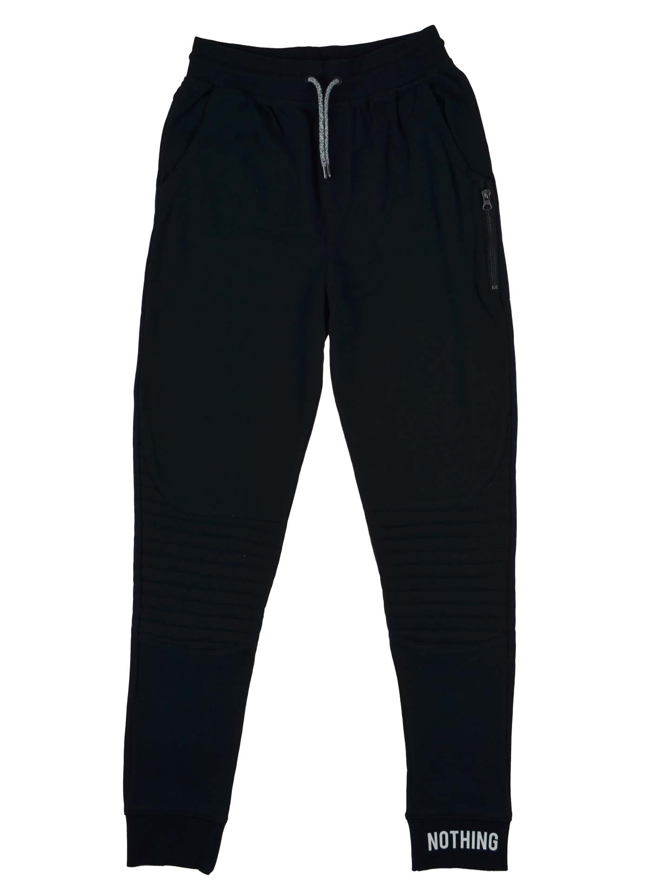

Саме мій магазин розробляє якісний та крутий Український одяг.
Асортимент одягу в моєму магазині:
Штани
Найкраші Кросівки Українського виробництва
Гарні футболки
UkraineRog Кофта
Відкриття
Найпершим мій магазин відкриється в Житомирі 12 квітня 2024 року, потім я планую розширюватись по всій Україні.
Клієнти
Клієнтам в моєму магазині ми будемо пропонувати різний одяг, в перший тиждень після відкриття весь одяг буде по знижці 50%, поспішайте в магазин UkraineRog.
Наш одяг:

Мертві супутники
Мертві супутники - штучні супутники, які припинили своє функціонування і з певних причин не були знищені. Це не було передбачено проєктом запуску.
Найвідоміші випадки падіння мертвих супутників на Землю:
"Супутниковий кущ" - перший штучний супутник Землі запущений на орбіту в СРСР 4 жовтня 1957 року
"Світло й Долі" - супутник США, який впав у 1978
"Салют-7" - Радянський космічний комплекс "Салют-7" розпався на частини, включаючи фрагменти супутника, які впали в Тихий океан у вересні 1991 року
"Мір" - російський супутник (Мир) впав в Тихий океан в 2001 році.
"Тяньгун-1" - Китайський космічний лабораторний модуль, який впав на Землю в квітні 2018 року після багатьох років служби в космосі
Загроза
Мертвий супутник є перешкодою для нормального функціонування інших супутників та забруднює космос. А також може неконтрольовано впасти на Землю.
Ліквідація
Можна здійснити декілька методів: підняти на вищу орбіту; застосувати реентрізацію;знешкодити енергетичними приладами або лазерами.
Рівень Загрози:
Останні ступені ракет
Останні ступені ракет - останній етап ракети-носія, який відокремлюється після того, як основна частина піднялася на велику висоту і набрала достатню швидкість для досягнення орбіти чи іншого пункту призначення.
Типи останніх ступенів ракет
Centaur (United Launch Alliance)
Delta Cryogenic Second Stage (DCSS)
Fregat
Falcon 9's Second Stage (SpaceX)
Загроза
Створює ризик для активних супутників та космічних систем, засмічує космос, може неконтрольовано непередбачувано впасти на Землю.
Ліквідація
Ліквідувати можна падінням останніх ступенів ракет в атмосферу або переходом на вищу орбіту.
Рівень Загрози:
Невеликі шматки
Невеликі шматки - фрагменти обшивки, або інструменти, що випали з рук космонавтів (астронавтів) та космічних станцій
Типи невеликих об'єктів в космосі:
Мікрометеорити- це дуже дрібні частинки космічного походження, які можуть включати в себе метеороїди, астероїди, пил та інші дрібні об'єкти.
Астероїди та метеороїди - це невеликі космічні об'єкти, які можуть знаходитися в орбіті навколо Сонця.
Пил в міжпланетному просторі - це дуже дрібні частинки, розсіяні в міжпланетному просторі, які можуть мати різне походження.
Загроза
Може пошкодити космічні апарати, загрожує космічній міжнародній станції та створює ризик для астронавтів.
Ліквідація
Можна активно видаляти та зменшувати швидкість об'єкту спільними міжнародними зусиллями.
Рівень Загрози:
Фрагменти знищених супутників
Фрагменти знищених супутників - це частини або уламки, що утворюються в результаті знищення або розпаду штучного супутника, який перебував у космічному просторі. Це може статися внаслідок різних подій, таких як зіткнення із іншими об'єктами в космосі, вибухи чи інші технічні або природні події.
Основні джерела походження фрагментів знищених супутників:
Зіткнення з іншими об'єктами: супутники можуть зіткнутися з іншими об'єктами в космосі, такими як інші супутники, частини ракет, або навіть із сміттям.
Експлозії на борту супутника: вибухи або інші технічні проблеми на борту супутника, що можуть спричинити утворення фрагментів.
Абоізійна дія сонячного світла: взаємодія супутників із сонячним випромінюванням та іншими космічними середовищами може впливати на їхню структуру та стійкість, що може призвести до їхнього розпаду.
Кероване знищення: у деяких випадках супутники намагаються керувати своєю декомісією, випускаючи паливо або інші матеріали, щоб змінити свою орбіту та пришвидшити входження в атмосферу. Цей процес також може включати вибухи або інші заходи для знищення супутника.
Загроза
Вони можуть стати джерелом космічного сміття і представляти ризик для інших супутників та космічних апаратів на орбіті
Ліквідація
Щоб усунути фрагменти знищених супутників можна застосувати демонтаж або кероване знищення